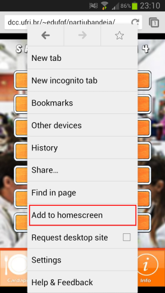

Como adicionar a página do Partiu Bandeja como aplicativo.
Se você possui Android 4.0+ pode tentar baixar o aplicativo na Play Store ou continuar a instalação por este método.
Devemos utilizar a opção do seu navegador que adiciona a página como um ícone na tela inicial.
Após acessar a página do aplicativo escolha o sistema do seu smartphone abaixo e siga os passos.
iOS
Android
Windows Phone
iOS
(Método descrito para iOS 6. Similar para outras versões).
1 - Clique no botão "compartilhar", que fica no meio da barra inferior com o símbolo de uma seta.
2 - Escolha a opção "Adicionar à tela de início".
3 - Escolha um nome para o ícone e clique em "Adicionar" no canto superior direito.
Android
1 - Clique no botão menu do seu navegador, os 3 pontinhos no canto superior direito da tela.
(Em alguns aparelhos o botão menu está na barra inferior de botões do Android).
2 - Escolha a opção "Adicionar à tela de início".

3 - Escolha um nome para o ícone e clique em "Adicionar".